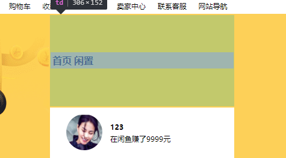
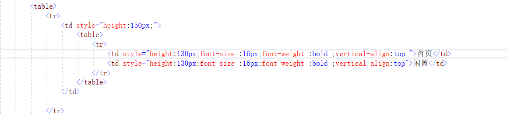
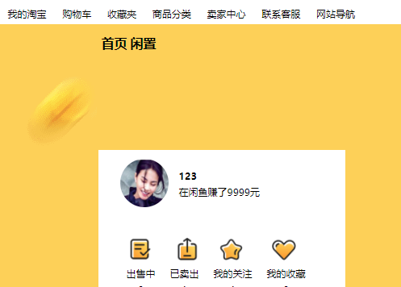
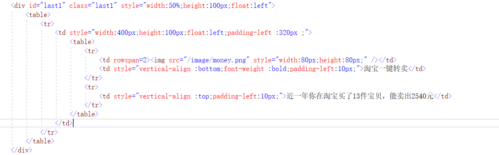
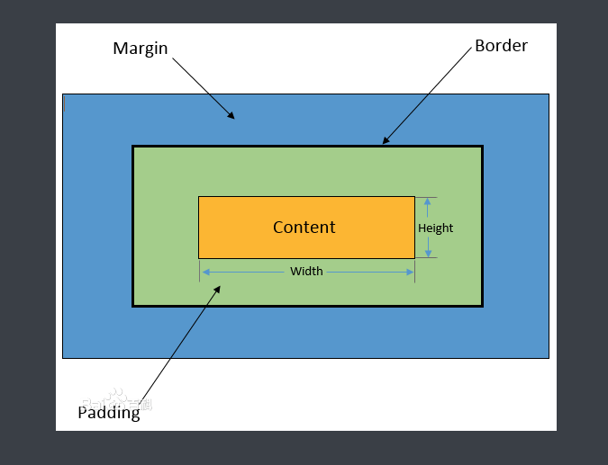

1.
如果所示，问题:“首页”和“闲置”文字部分位于table中部
解决方法：需要取消vertical-align:middle属性，将其设置为vertical-align:top,并将文本的高度改为整个table的高度

改正后最终的实现效果为：

明显可以看到"首页"和"闲置"文字到了table顶部。
2.padding-left：距离左边界
float :left向左浮动
font-size ：设置字体大小
font-weight：字体粗细设置
设置图片为原型代码写为：<td ><img src="image/wff.jpg" style="width:60px;height:60px; margin-left:20px; border-radius:30px" /></td>
3.
实现：table中文字和图片的对齐
如图所示，整个图片是用div嵌套table来完成的，table内部又包含文字和图片两部分，让图片和文字左对齐的方式是将图片的行数设置为两行，文字部分则设置vertical-align:bottom即可，代码如下所示：
4.盒子模型的各部分组成

区分padding-left和margin-left的区别简单的说padding是内边距，margin是外边距
总结：第一次接触静态页面，其中遇到了很多问题，还需要不断摸索，不断学习！